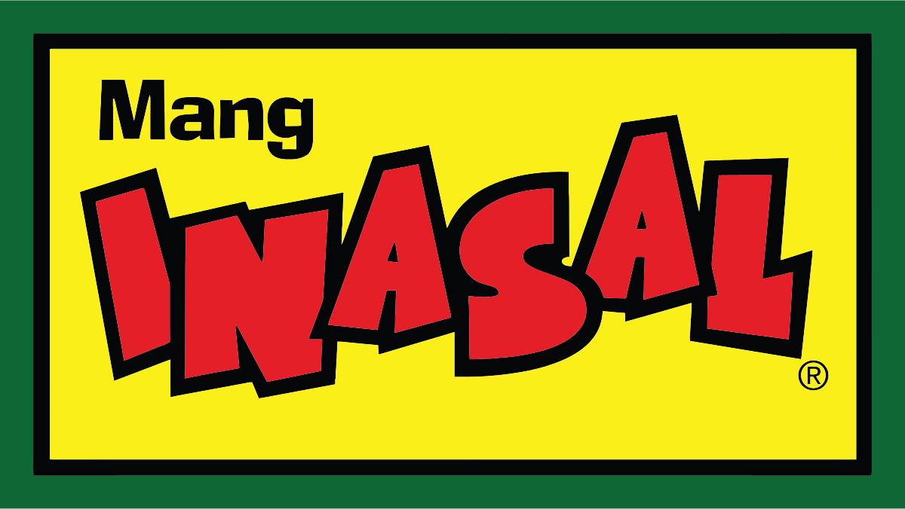
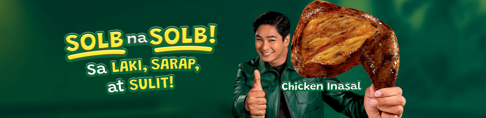
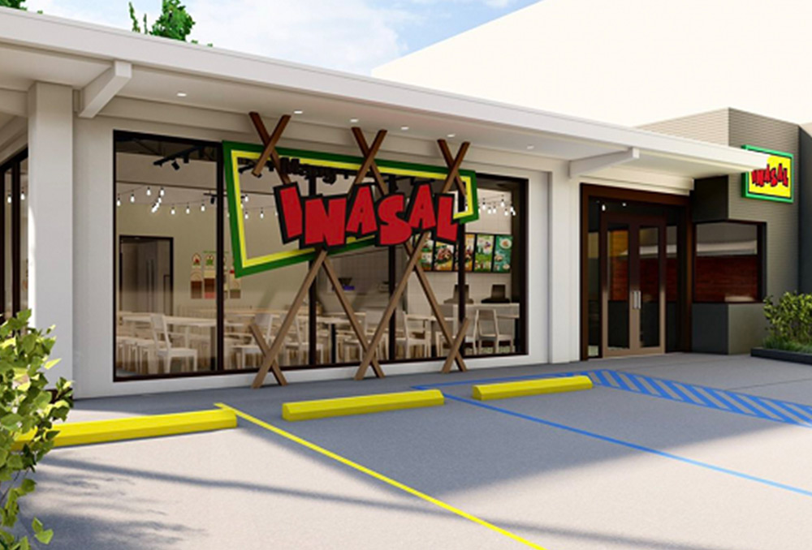

|  Home Menu About Us Contact/Location |
|  |
Mang Inasal is the Philippines Grill Expert that delightfully serves Ihaw-Sarap food and Unli-Saya experience.
Visit the original / reference site here: https://www.manginasal.ph/
|  |
Mang Inasal is the Philippines’ Grill Expert, loved for its Ihaw-Sarap (deliciously grilled) meals and Unli-Saya (unlimited fun) dining experience. |